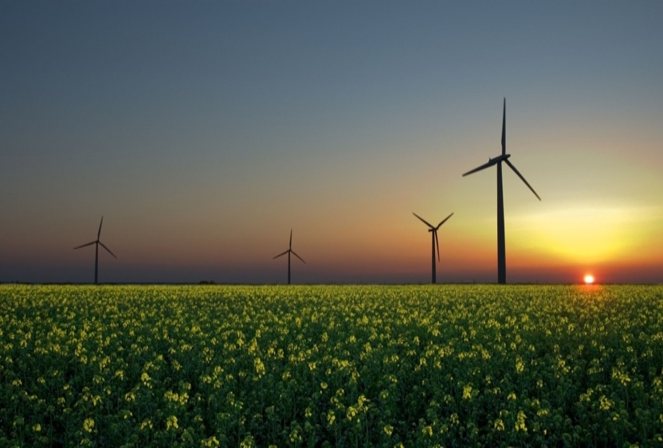
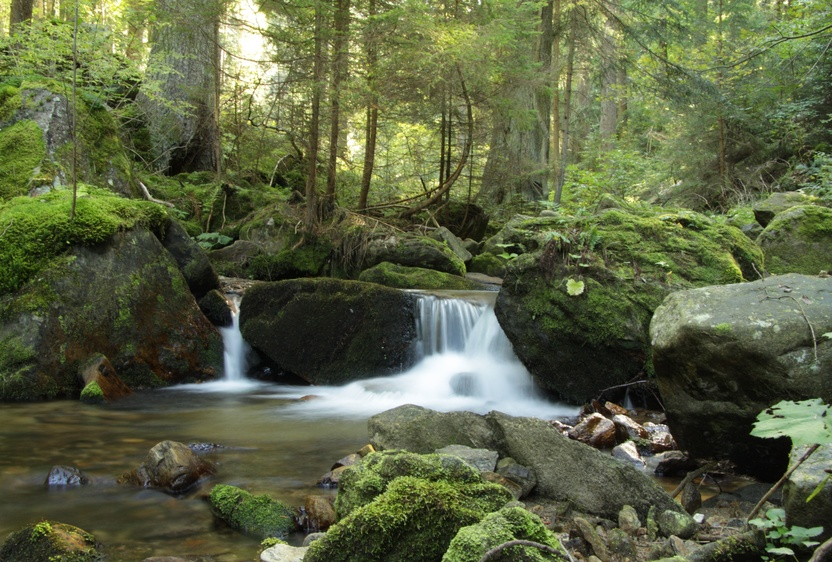
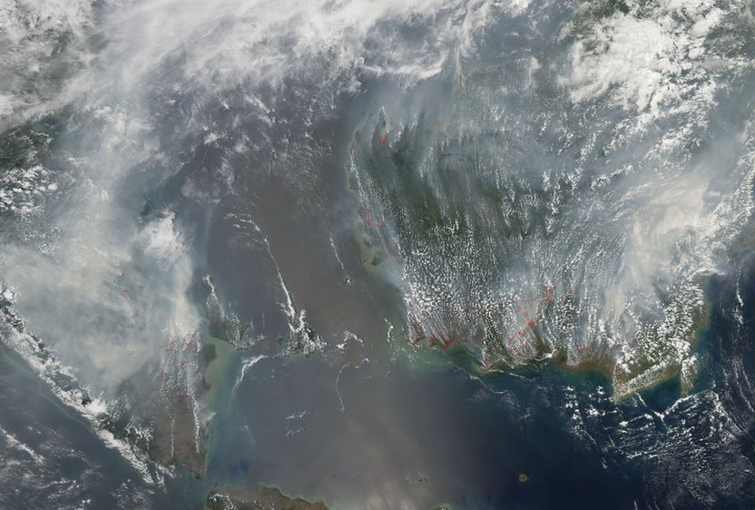
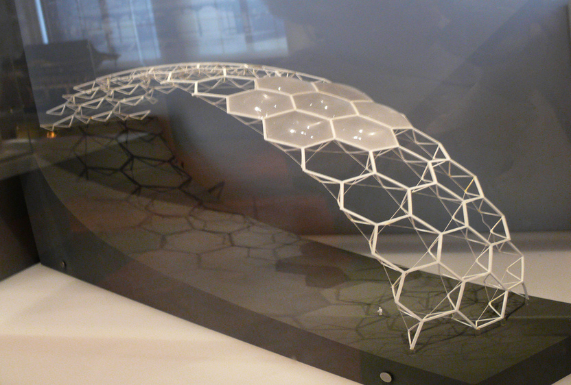

An estimated one-half of the world’s population still lacks clean cooking and heating options and almost one-quarter do not have access to grid based electricity. At EED, sustainable energy goes beyond renewable energy solutions. We take a holistic approach that balances environmental concerns with socio-economic realities and commercial opportunities. We work with private companies, non-government agencies, governments, research institutions and community groups to optimise energy solutions.
- We heighten understanding through our research approaches in energy resource assessments, demand-side studies, market research, barrier analyses, value chain analysis, energy demand modelling, sizing and classical cost-benefit analyses.
- We assess the impacts of various types of policy and legislative environments on energy access including no policy environments, inadequate or conflicting policy environments, adequate policy with no implementation environments and adequate policy with implementation. We also work with our clients to develop supporting policy and legislative options towards achieving identified priorities and desired objectives. We also assist organizations, projects and programmes to set clear visions, objectives and implementation plans.
- We facilitate the creation of sustainable business practices and markets through innovative financing and product structuring to meet the evolving demands including base of the pyramid solutions (BOP), community-level utilities, institutional energy solutions and grid-based electrification. We advise on energy technology options, business models, access to finance and strategic partnerships.
- We also develop renewable energy technologies curricula for theoretical and applied settings, and provide specialized training (e.g. grid emission factor, energy audits, marginal abatement cost curves, energy system analytics, energy demand modelling and use of optimization and planning tools like HOMER and RETSCREEN).

Competition for natural resources is a common trigger for communal, sectoral, national and international conflicts. At EED, we take a systems approach in evaluating natural resource challenges. This approach goes beyond the forests, rivers, land, natural parks and mineral resources, and considers the demographic, social, political and economic factors.
- We offer natural resource planning services for projects, programmes and organizations. This includes offerings aimed at ecologically responsible management, monitoring and evaluation, assessment of alternative livelihoods, waste management, community participation in NRM and natural resource inventorying. We execute natural resource assessment, surveying and related services including desktop research, field surveys, geo-spatial assessments, mapping services and information management.
- We assess the impacts of various types of policy and legislative environments on natural resource management and work with our clients to develop supporting policy and legislative options towards achieving identified priorities and desired objectives. We also assist organizations, projects and programmes to set clear visions, objectives and implementation plans. Monitoring trends in natural resource science, management and policy is another product offering under our portfolio.
- We advise clients on compliance requirements and regulatory aspects of project implementation including environmental impact assessments, strategic environmental assessments and general environmental assessments.

The concentration of carbon dioxide in the atmosphere exceeded the 400 parts per million threshold in 2013. Without drastic and urgent action it seems likely that the earth will experience a temperature rise of up to 5 degrees C by 2100. These numbers mean little to nothing among pastoralists and small-scale farmer groups who are already experiencing rapid changes driven by climate variability as well as other confounding factors. At EED, we view climate change not as a phenomenon in itself, but a pivotal emergent factor in the story of development.
- We carry out risk and vulnerability assessments at the community, sector, national and regional level which go beyond the classical meteorological and economic models to include socio-economic and political factors that will, inevitably, determine the extent of the impacts. We work with our clients to develop climate change strategies and actions plans that set the platform for knowledge driven action. Identification of opportunities for disaster risk reduction, sectoral and national needs, priorities and achievable solutions forms part of such engagements.
- We do advise on climate finance options including carbon markets (both voluntary and the clean development mechanism – CDM), on Nationally Appropriate Mitigation Actions (NAMAs), carbon foot printing and other carbon market services. We also work with our clients to develop tailor-made tools that manage their climate change impacts including databases, carbon calculators, voluntary standards and performance benchmarking.
- Climate change adaptation support is also a core service offering. We design specific adaptation plans and strategies that strengthen resilience and shores up systems adaptive capacity. We also work with government and private sector entities to identify policy and regulatory frameworks that take cognisance of the changing climate.

At EED, we believe in the power of demonstration. We are constantly designing, testing and refining innovative business models that will deliver sustainable energy and other basic needs. In addition to the financial incentives, we hope that our projects will increase access to services, open frontier sectors for investments and model scalable businesses. Through our subsidiary company, EED Energy Limited, we are developing or implementing the following projects:
- We are working with large energy users to develop targeted energy management solutions that enable them deliver goods and services at the least possible energy and environmental cost without compromising production or quality. Through long-term energy management partnership, we develop tailor made energy systems monitoring tools that provide real time energy analytics as well as long-range energy utilization assessments. This is in line with the Energy Regulatory Commission (ERC) notice that requires all industrial, commercial and domestic users of energy consuming a minimum of 180,001 kWh of electricity per year (equivalent to 648,004 MJ) to carry out and report on an energy audit at least once every three years.
- We are partnering with an industrial client to develop an Energy Service Company (ESCO) built on a waste to energy platform using plastic pyrolysis technology. This will address the plastic waste disposal challenge while providing thermal energy alternatives to the current heavy fuel oil use.
- We are working with various stakeholders, both local and international, to develop a framework for attracting private sector investment in geothermal direct use with demonstration projects in large cooling and heating projects.